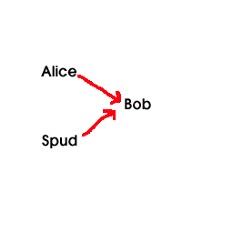
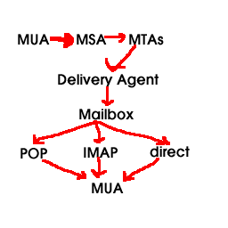

dwheeler@dwheeler.com
DRAFT. First version December 8, 2002; Released April 2, 2003; Updated September 11, 2003
Some other definitions of spam limit spam to only cover commercial messages,
but this is an irrelevant distinction. It doesn't matter if the
spam is commercial or not, if the sheer volume of spam makes it impossible
for people to use their own equipment or email account.
This paper defines a spam threat model (involving Alice the legitimate sender, Bob the receiver, and Spud the spammer), as well as desired characteristics of a solution. In particular, it defines a "ham-authenticating" approach as an approach that works by authenticating that a given message is ham (not spam) before delivering the message. It discusses several sample anti-spam approaches that are not "ham-authenticating", followed by examples of approaches that are ham-authenticating. The paper then describes the design of a new ham-authenticating protocol, the "guarded email" set of protocols for countering spam. In guarded email, received email is first checked by a "guard," and only email that is authenticated as ham is delivered to the final recipient Bob. Email is authenticated as ham by being signed or having a "from" address already listed in Bob's whitelist, or by including a password (or other authentication marker) selected by Bob. Otherwise, the email is not accepted; instead, Bob replies with a human-readable challenge explaining how to determine the password. Any time Bob sends an email, or receives an email with a password, that address is added to the whitelist. Techniques to eliminate problems, such as preventing loops, handling mailing lists, and eliminating cleartext passwords, are also discussed.
This is followed by the actual guarded email protocols (both the minimum guarded email protocol and the full guarded email protocol). This is followed by a discussion on implementation issues, rationale, and conclusions.
The body of this text presumes that the reader is familiar with how email
is handled on the Internet. Readers who do not have this familiarity
might wish to read the appendix first
, which briefly describes this environment and the relevant Internet standards.
This section briefly describes the problem to be solved (the threat), and
desirable characteristics of a solution.
Some user named Alice wants to send a non-spam message to some other user named Bob. Bob would like to receive the message from Alice, and may later wish to easily reply back to Alice. However, Bob and Alice may not know each other; indeed, Bob may have never received a message from Alice before.
Unfortunately Spud, the spammer, constantly sends spam (unsolicited
bulk email) to as many email addresses as possible, as often as possible,
including to Bob (and possibly Alice too). Bob would like to
not receive email from Spud, yet receive email from Alice. Note
that Spud may have a profit motive (e.g., Spud may be advertising for
a child pornography site), or not (e.g., Spud may be advocating violent
political activities). Spud is likely to scan public information
to find email addresses, or simply guess likely email addresses to spam.
Spud can forge arbitrary values in email messages, including forged
"from" addresses. Spud may also snoop unencrypted communication,
including email, to obtain useful information.
Spud is likely to be willing to use whatever automated technique
can maximize the number of Bobs that receive his unwanted messsages.
If there was a reason to do so, Spud would be willing to use a valid return address, and even automatically respond to any messsages if that would significantly increase the number of spam messages that were received.
As of 2003, Spud is less likely to have a valid return address, in part
because Spud often doesn't want to receive the large number of error
messages generated - instead,
Spud is likely to simply forge invalid "from" addresses.
Spud is somewhat less likely to forge "from" addresses
from addresses Spud doesn't own, because this is illegal and carries legal
penalties in many locations. However, Spud may be willing to break
the law if necessary, so a useful anti-spam technique should still be at
least partly effective if Spud violates laws. If many users use a
spam-prevention technology, Spud will change his approach to try to counter
the technology. Thus, an anti-spam technique must still be at least
partially effective, even if Spud knows how it works.
The opposite of "spam" is sometimes called "ham". Thus, the fundamental
task is that Bob wants to receive ham from Alice, even if Bob does
not previously know Alice, while Bob does not want to receive spam from
Spud.

Note that this paper does not deal with countering computer viruses and
email worms.
There are a vast number of websites and papers about countering spam. For example, a survey paper describing various methods to control spam includes "Unsolicited Bulk Email: Mechanisms for Control" by Hoffman and Crocker (http://www.imc.org/ube-sol.html ). Unfortunately, this survey doesn't fully identify ham-authenticated email as a way to counter spam. They do identify "accountability", but they presume that senders themselves, the first hop, or a relay must specifically authenticate their identity. In this paper, all that needs authentication is that the email is not spam, not truly the sender's identity. A nice summary of anti-spam techniques is given in Spam Filtering techniques: Six approaches to eliminating unwanted e-mail by David Mertz. Two commonly-discussed methods for countering spam, that do not authenticate that the email is ham, are black lists, temporary email accounts, and heuristic spam identification methods.
Many email systems use various heuristics to analyze each email message
to determine whether or not it is spam. Many programs, such as SpamAssassin,
look at the headers for various clues and perform various queries in
an attempt to determine if a message is spam or not. Users can often create
simple filters to catch certain keywords (such as the "ADV:" keyword
required by some state laws in subject lines), but manually manipulating
such filters quickly becomes too time-consuming.
The 2003 Spam
Conference
in Cambridge, MA concentrated primarily on heuristic spam identification
techniques.
Paul Graham's plan for spam discusses a naive Bayesian approach, in which each email user can run a program that creates a personal spam filter based on statistical analysis. Graham didn't invent the idea, but he did make it much more widely known. He more recently published various improvements on it . There's a great deal of study on the approach, including An evaluation of Naive Bayesian anti-spam filtering , An Experimental Comparison of Naive Bayesian and Keyword-Based Anti-Spam Filtering with Personal E-mail Messages , Learning to Filter Spam E-Mail: A Comparison of a Naive Bayesian and a Memory-Based Approach , and information from lsi.upc.es and monmouth.edu ; Slashdot has carried a discussion about it. Ifile implemented the idea many years ago - it claims a first release date of Aug 3 20:49:01 EDT 1996, and the author doesn't claim that is the first time this has been implemented, either. CRM114 has an active filter using this technique, but can extend the probabilities to phrases and not just words (some studies have suggested that doing this doesn't help). Eric Raymond has developed bogofilter , a high-speed implementation. A selected set from the newsgroup news.admin.net-abuse.sightings might be useful for initial training, though it can't be used directly (a spammer will try to fill it with useful messages to disable filtering).
The SpamBayes project is researching how to improve classification of spam vs. ham messages when examining the message contents. They began with the naive Bayesian approach, but have been evaluating variations on the technique to improve it further. Their tests show that examining pairs of words are actually less effective than examining words individually, which is an interesting result. They have also developed a different algorithm for combining the probabilities of individual words, the chi-squared approach, which in their tests produce even better results. Here is their description in their own words:
The chi-squared approach produces two numbers - a "ham probability" ("*H*") and a "spam probability" ("*S*"). A typical spam will have a high *S* and low *H*, while a ham will have high *H* and low *S*. In the case where the message looks entirely unlike anything the system's been trained on, you can end up with a low *H* and low *S* - this is the code saying "I don't know what this message is". Some messages can even have both a high *H* and a high *S*, telling you basically that the message looks very much like ham, but also very much like spam. In this case spambayes is also unsure where the message should be classified, and the final score will be near 0.5. So at the end of the processing, you end up with three possible results - "Spam", "Ham", or "Unsure". It's possible to tweak the high and low cutoffs for the Unsure window - this trades off unsure messages vs possible false positives or negatives.All heuristic approaches suffer from the problem of false positives and false negatives. If too many spams are misclassified as ham, then the user will start to see too many spam messages (eventually becoming unable to use email, if the problem is severe). If hams are misclassified as spam, then users will lose email messages - and for most users, that's even worse, so such heuristics have to conservatively let messages through unless it's extremely likely that the message is spam. Also, these heuristics are not immune to spammer counter-attacks. For example, a spammer could send a spam message with a randomly-created dictionary list of "good" words attached, in the hopes of confusing the classifiers into misclassifying the message as ham. Another approach is to create very small email messages, with a hypertext link to the real message. Counter-counterattackers (e.g., weighting words seen first) are possible, but clearly this has the potential for an endless back-and-forth struggle.
Hash cash is payment in burnt CPU cycles by calculating n-bit partial hash collisions on chosen texts. The idea of using partial hashes is that they can be made arbitrarily expensive to compute (by choosing the desired number of bits of collision), and yet can be verified instantly. This can be used as the basis for an ecash system measured in burnt CPU cycles. Such cash systems can be used to throttle systematic abuses of un-metered internet resources.
Hash cash is denominated in the bit length of the partial hash collisions. One bit longer is twice as expensive to compute (on average). By choosing an appropriate denomination of hash collision we can create a system of metering which does not pose a problem to the normal sender, but which becomes expensive for large mass mailings. For example, my workstation is able to test 180,000 hashes per second. A 20 bit hash collision takes on average 6 seconds to produce at this rate. If I am charged by recipients a 20 bit hash for each email I send, I can only usefully send 3750 mails per day. This should be more than adequate for the normal user, but could easily prevent a spammer breaking even with his low rate of success. This should cause spammers to either give up sending spam, or to work hard on increasing the accuracy of their direct marketing database, either option being is a net positive result.
The recipient's service provider's SMTP server could be modified to discard, or bounce messages with insufficient hash cash. Notification of the amount of hashcash required could be part of the bounce message. Alternatively the user could use the hashcash client as part of incoming mail filtering. If the system administrator, or the user decides that they are still getting spam with the current postage charge, they increase the hashcash charge for receipt. Hashcash suffers from a high rate of inflation: machines get faster every year. In the longer term it may be necessary to increase the hash collision postage rate by a couple of bits or so a year.
For mailing list servers which have a legitimate need to send many emails (50 messages/ day x 1000 subscribers = 50,000 emails / day) the requirement to include hash cash tokens would become expensive. To solve this problem subscribers should put the mailing list address in a postage-free recipients list.
Habeas' "Sender Warranted Email" (SWE) (TM) system as described in
http://www.habeus.com/faq/index.html
provides a somewhat different approach; an article briefly describing
the approach is at
http://www.oblomovka.com/writing/haeas%3A_the_antispam_haiku.php3
. Email which wishes to warrant that it is not unsolicited bulk
email can include a special Haiku in the email message header. This
Haiku is termed the "Habeus warrant mark," and since it is copyrighted
and includes a trademark reference, a license is required to use the
mark. Receivers can simply check to see if the Habeas mark is included.
Habeas has widely announced that it will legally enforce its mark,
and has also requested a patent for this approach.
This approach has the advantage of simplicity. However, it is not yet clear if spammers will truly respect this if it is used widely; not all countries may recognize Habeus' rights. Habeas' license may not suit all its users; ideally, recipients should be the ones to choose exactly what license is appropriate (recipients can use a whitelist, of course, but the mark can only be applied if certain criteria are accepted). Also, since a single company owns the rights to the license, if this approach is widely used this represents a serious overcentralization of control. This is especially true since, if a patent is granted, there could not be competing marks. Currently, use is free for ISPs and individuals. However, nothing prevents Habeas from substantially raising its rates in the future, creating a worldwide corporate tax on the ability to receive email. Centralization of any single company in the worldwide infrastructure is not desirable, no matter how noble the goal.
Another approach is to require passwords to be in the email for it to be accepted. E.G., by including the password in the email address, the subject line, or some other area. If the password isn't included, the email is simply rejected.
For example, spamgourmet (available at http://www.spamgourmet.com ) has an "advanced mode", and in this mode it uses ham authentication through several mechanisms. In particular, it supports "watchwords" (essentially passwords) that must be included in a disposable address's name. It also supports requiring a 'prefix' that is required on every new disposable address from an untrusted sender. Spamgourmet's advanced mode also supports whitelists (which it terms "trusted senders"), which are discussed above.
A serious problem with password-based email approaches is that it is difficult for strangers to initiate a conversation with someone whose email inbox is protected with a password. A more flexible approach to handling this case is often useful, leading us to challenge-response systems.
There are a large number of techniques which involve Bob replying back a challenge to Alice under certain conditions before accepting an email. These are collectively referred to as challenge-response systems. Such systems aren't new; mailing lists have used simple challenges and responses for years, and challenge-response systems apply the approach to individual mailboxes (as well as mailing list boxes). Indeed, challenge-response is simply an automation of the "Halt! Who goes there!" challenge that guards have been issuing for millenia.
In 1992, Cynthia Dwork and Moni Naor of IBM described a challenge-response system in which the sender would be asked to process a particular solution before the receiver would accept the email [Dwork 1992]. This work was publicly presented at Crypto '92.
On May 26, 1996, Otmar Lendl (lendl at cosy.sbg.ac.at) posted how to implement a challenge-response system using procmail. This was publicly posted to the newsgroup "news.admin.net-abuse.misc" as the subject "Re: Unsolicited junk email from exd48265@interramp.com", message-ID <4o8cqk$8ah@dwst13.wst.edvz.sbg.ac.at>#1/1. This was a simple script that accepted email that accepted email if it came from certain sources or included a special password in the "Subject" line; otherwise, a challenge was replied back to the original sender. This posting included the code to implement the approach, as a response to another query in the newsgroup. Indeed, there are hints that others have implemented challenge-response systems far earlier as well.
On November 17, 1996, David F. Skoll posted how to implement a challenge-response system. This was posted to the public Usenet newsgroup news.admin.net-abuse with the subject "How to make SURE a human is sending you mail (was Re: Random e-mails)".
Professor Timo Salmi later re-developed in the summer of 1997 an "email password system" using what he calls "Timo's method", described at http://www.uwasa.fi/~ts/info/spamfoil.html . This is implemented using Unix procmail, and is a little tricky to install. After rejecting known spammers identified via a blacklist, mail with "from" addresses in a whitelist are passed on to the recipient. Mail with from addresses not in a whitelist are not delivered; instead, they are given a reply, saying that they must add a stated password in the subject line. He defines "email password systems" as any system requiring a password in the header or body of the email for the email to be passed through. A few heuristics are used to prevent mail loops. Updating the whitelist must be done by hand (by modifying a program), the email currently replied simply states the email (so a spammer could automatically identify the password), and the passwords are sent as cleartext (so spammers could capture passwords through email traffic). The approach described later, "guarded email", is based on this approach.
The fact that these ideas were publicly discussed before or in 1997 is important, because later on some software patent squatters decided to patent this obvious idea. The U.S. patent office did not understand that this was an obvious idea, and did its usual ineffective job of searching for prior art. Thus, they granted the patent on yet another obvious idea. Mailblocks of Los Altos, California, then purchased the two relevant patents, 6,199,102 (filed in 1997) and 6,112,227 (filed in 1998), and has been trying to use them to prevent competition. More information about this patent fight is available from ZDNet, Silicon Valley, MSNBC, and Slashdot. Since there's clear prior art, it appears that the basic patents on challenge-response should be trivially invalidated, though unfortunately patent invalidation is a complex and unpredictable business.
Yakov Shafranovich maintains a list of patents and prior art related to anti-spam measures. Scott Nelson also has a list of some prior art related to anti-spam measures.
SolidBlue's Spam Interceptor essentially works the same way. Strangers
who send email are sent a challenge that "only a human could answer".
If they succeed, they are added to the recipient's whitelist and
aren't asked questions again. More information about them is available
at http://spaminterceptor.solidblue.biz
.
MailCircuit's HandShake Verification and Spam Filter Process, described at http://www.mailcircuit.com/sf.html , describes a somewhat similar system. A reply is sent, but instead of including the password in the replied email, a "letter of introduction" is replied and the unknown email is held in a special queue. New senders must then log on to a web page (as described in the letter of introduction), which is a unique web page for that email. If the sender makes a positive reply, then the message is sent on to the original recipient and the sender is added to the "verified" list (so future emails from the "from" address will not be held). Note that if a spammer provides a valid return address, this could be easily faked. Unconfirmed email messages are eventually discarded.
Bluebottle has a challenge-response system. By default, it simply requires a reply (which can be easily forged), but it can be optionally set so that the reply must include the full name of the intended recipient. This has a significant advantage for ease-of-use, though clearly spammers could work to capture mataching names and email addresses to defeat this (since people normally don't want to change either).
The Tagged Message Delivery Agent (TMDA) project at http://tmda.net is developing a program to support verification. TMDA combines a "whitelist", a "blacklist", and a confirmation system for unknown, but legitimate senders. The default installation of TMDA assumes that spammers never give a valid return address, and sends back unconfirmed messages to the purported sender. Senders who wish to have their message sent can simply "reply" to the confirmation message; this is called "reply to confirm". Note that if a spammer is willing to have a valid return email address, a spammer can trivially develop programs to automatically confirm email - completely subverting the default TMDA installation. On the other hand, this assumption is often true currently, and it certainly makes use of TMDA simple. TMDA supports other confirmation approaches: (1) receivers can omit the "Reply-To" line, so legitimate senders will have to determine the confirmation address from the body of the message (instead of just hitting "Reply"), or (2) receivers can require senders to confirm email using a web confirmation system. TMDA features automatic whitelisting of confirmed senders, MUA-independent, site-wide installations using relay rewriting (including non-unix clients such as Microsoft Windows), and uses HMAC (Hashed Message Authentication Codes) for "cookie" generation and verification. The TMDA FAQ describes it in more detail, as well as listing other similar programs. Instead of sending a "cookie" in the subject line or other email header, TMDA creates specially tagged email addresses when sending out confirmation requests, so that email must be sent with name-"dated"-date-hash. For example, a second email might be sent to jason-dated-1032297526.da8e7f@mastaler.com. This has pros and cons; many do not like the complicated email addresses this creates, though by using the email "Reply-To" tag this problem can be reduced. See the TMDA FAQ for more discussion on this topic. TMDA can optionally add a user to the whitelist if they respond to the password (termed the "cookie"); see the CONFIRM_APPEND and ADDED_HEADERS_CLIENT. Another problem is that TMDA is typically difficult to install; the complicated email addresses require configuring an MTA specially, and many users will either not have the rights or not know how to do this.
Another challenge-response system is the Active Spam Killer (ASK) at http://www.paganini.net/ask . As with TMDA, this system presumes that the spammer will not receive replies, since a spammer who receives replies could write a program to automatically respond to the email. As they note:
The real fun happens when an email comes from an unknown user (i.e, someone not in any of your lists). In this case, ASK calculates the MD5 checksum of the message + a secret MD5 key (configured during installation time). This number is sent as part of a "confirmation message" back to the user. If the user replies to it, the confirmation number (in the subject) is recognized, the message is dequeued and delivered. If the user does not reply, the message remains queued until it's removed.More information about ASK is in their How it works document and their FAQ .
The program has some intelligence to deal with specific cases. For instance, if a mail is sent to a non-existing user, the error message from mailer-daemon is ignored. This avoids seeing lots of "invalid user" messages in your inbox.
Another interesting "twist" is that messages coming from your own email address are never trusted. If the spammer knows your address he could easily fake your own address as the From: line. Messages coming from you will be identified by a "mailkey", a piece of string you always put on your message by default (maybe a piece of your own signature). Note that this has the added side-effect of allowing any messages coming in reply to a message you sent to someone (as long as that person keeps your "mailkey" in it's quoted reply, a practice common these days).
ASK will by default deliver mail coming from MAILER-DAEMON, unless it is an invalid email response to a confirmation message. If a spammer uses MAILER-DAEMON in the "From:" field, he could defeat ASK's protection. If that becomes an issue, future versions of the program will "Junk" all mail coming from MAILER-DAEMON, unless it also contains our mailkey (normally Mail Transfer Agents append the original message to the error message, thus triggering the mailkey mechanism).
Another challenge-response system is Whitelight at http://sourceforge.net/projects/whitelight . "Whitelight is a lightweight whitelist implementation built atop procmail, with an autoresponder-based confirmation mechanism. Email with bogus return addresses (read: spam) is silently but effectively filtered out."
Mozilla bug #156744 recommends adding support in Mozilla mail (the
basis of Netscape Mail) for TMDA (
http://bugzilla.mozilla.org/show_bug.cgi?id=156744
). Mozilla bug #187044 recommends adding support for some challenge/response
system to Mozilla mail
(http://bugzilla.mozilla.org/show_bug.cgi?id=187044
).
One problem with challenge-response systems is that strangers must
go through an additional challenge for their email to go through on the
first try. Professor Timo reports that this is not a serious problem.
Throughout this text, the sender of the original legitimate message
is Alice (unless otherwise noted), while the intended eventual recipient
is Bob. Bob has a guard controlling his inbox; Alice may or may
not also be guarded. Spud is the spammer.
The following sections discuss challenges, password authentication, whitelists, loop prevention, eliminating cleartext passwords, countering forged sender addresses, extending the whitelist into a speciallist, import/export of whitelists or speciallists, alternatives to whitelists, dealing with forwarded email, and some variations on the approach (e.g., removing challenges and removing passwords).
I suggest sending the following in a challenge:
Challenges could even give directions for how to obtain the password, rather than specific directions on how to determine the password. For example, it could say "to obtain the password, please call me at (555) 555-1212. Note that this is a work number, and unsolicited sales phone calls are not allowed." If the directions involve a mechanism that already forbid spam (e.g., a fax number), this could provide an even stronger legal case that any spam sent is illegal. At the most extreme case, the challenge could be "figure it out".
A challenge does not need to be difficult; indeed, if it's too difficult,
Bob may not receive email that he would wanted to have received. However,
this approach allows Bob to choose the level of difficulty. I would
suggest that implementations permit multiple email passwords, and multiple
challenge opportunities in a challenge message; that way, if Bob wants to
use difficult challenges, at least he can offer several difficult challenges.
For most users, the challenge can be quite simple - the only goal is to require
that a human read and respond to the challenge.
A challenge-response system can also support an "anti-password" - a word that, if included in the message, will cause the message to be immediately dropped even if it also has the correct password. If the challenge includes the message, then a naive spammer who tries to include the text into a forged automated response may also include the anti-password - causing that message to be dropped.
If desired, implementations could create a "pending" folder so that users would know what email has been challenged and awaiting authentication. Users could then, if they have time, look at those pending messages. However, the suggested approach is specifically designed so that it is not necessary.
Note that if the spammer cannot receive email replies, which is true
for most current spammers, then the spammer cannot see the challenge at
all. Since such spammers don't see the challenge, they will be unable
to respond to the challenge and thus their spam will simply be thrown away.
This does mean that people must be able to receive replies if they may be
challenged; this appears to be a reasonable restriction. However, even
if most people had guarded email, spammers are unlikely to respond to every
challenge. Attempting to respond to every challenge will require a
human to read the challenge, greatly increasing the cost to spam beyond
its value.
One interesting facet about challenges is that they can include legal
text to make it far more dangerous for malicious spammers. This has not,
to my knowledge, been discussed elsewhere. For example, the challenge
text could do the following:
If a normal sender receives a challenge, they are likely to perform the challenge as long as it's relatively easy. After all, they presumably sent the email hoping that the receiver will receive it, and are probably willing to perform a short challenge to make that happen (especially if they only have to do it once for that address; see the whitelist discussion below). The answer to the challenge is termed the "password" here, and the process of checking the password is termed authentication which will be described next.
It would probably be useful for an individual guard to support multiple possible passwords. Thus, multiple challenges could be given for different groups of people (e.g., you can choose a chess challenge or a programming challenge), or simply provide an alternative in case one challenge turns out to be excessively difficult. As a related thought, if an email can include many passwords, it's far easier to support emailing to multiple guarded mailboxes: simply include all the passwords, and the guard will check them all (if any of the passwords work, then the email is accepted). There would obviously need to be an upper bound on the number of allowed passwords, or spammers might try to send massive numbers of passwords in the hopes of accidentally guessing a valid one.
Anyone can receive the challenge, and it probably isn't hard to solve, so individual passwords are not that valuable. Even more importantly, passwords can be easily changed; they're only used to start initial conversations with strangers. Thus, the password response could be sent as cleartext unless you are concerned that spammers will capture large amounts of traffic and immediately use those passwords to spam many people. Large amounts of traffic seem quite unlikely at first, as long as few use guarded email. If guarded email became popular, such data capture would be far more likely. However, cleartext forms would be far easier to use by ordinary email readers not equipped to support guarded email. Thus, implementations and standards should support both a cleartext and a non-cleartext way of sending responses. A non-cleartext password approach is discussed below.
An initial whitelist can be created completely automatically by examining all stored email (skipping any in a "spam" folder). Presumably, if there's a saved message from some other user U, then it's likely that more messages from U to the recipient would be welcome. The whitelist could include a domain name pattern that covers the recipient's organization, but by itself that would be a bad idea - spammers could easily determine that domain name and forge emails to get through. A recipient might optionally add domain name patterns for the organizations they routinely do business with (e.g., customers, suppliers, and sponsors), as long as it's unlikely a spammer could guess those other patterns. A recipient could even add patterns for organizations whose names are unlikely to be forged - e.g., while anyone can forge an email from the ".mil" domain, spammers are likely to find that unwise. Note that these domain patterns are not really necessary, and the scheme will work well without them. The initial whitelist could include some spammers; that's okay, since spammers generally change their source email addresses rapidly and the spammers can be manually removed from the whitelist.
The whitelist can be easily and automatically maintained by observing email traffic. Every time a user sends email to someone (including as a reply), or receives an email from someone that the guard accepts, those email addresses should be automatically added to the whitelist. It would be possible to add to the whitelist only when a message is saved, rather than when it passes the guard, but it does make the system easier to use if it's presumed that a correct password automatically adds to the whitelist. Also, the receiver's "postmaster" related addresses need to be added, at least temporarily (e.g., a few days), so that the sender can receive error reports should the email fail to be delivered (e.g., because the email address no longer exists). One complication is determining exactly what those other addresses could be.
One important complication: to receive mailing lists, the mailing list address must be included in the whitelist (since senders to the mailing list are unlikely to want to respond to many challenges). Ideally, email lists will standardize their behavior so that email readers can automatically detect subscriptions and add all the relevant email addresses (list address, administrative reports, etc.) to the whitelist. In practice, mailing lists follow one of a few common conventions; any time mail is sent out that appears to subscribe to a mailing list, those addresses should be added to the whitelist.
However, automatically adding to whitelists does not prevent all loops. For example, imagine that Alice and Bob both have guarded email but neither are in the other's whitelist. Spud could maliciously send a passwordless email message to Alice and forge the message so that it appears to come from Bob. Alice would then send a challenge to Bob. Since Bob does not have Alice in his whitelist, Bob would send a challenge to Alice. Alice still doesn't have Bob in his whitelist, so the email could repeatedly be sent back-and-forth forever. Automatic whitelist addition does not help in this case!
A similar problem can occur with error reports. If a challenge is sent and an error occurs (e.g., the email address is non-existent), then an MTA should reply with an error report. The guarded email system might reply with a challenge to the MTA, which might respond with an error report, and so on without end. Errors can occur not only with end systems but also with systems along the path of the message transmission. "Vacation" messages ("I'm on vacation...") from addresses Alice didn't send to can have similar issues.
Thus, some sort of loop prevention mechanism is needed to prevent two guarded systems from looping. Thankfully, this is rather easy to implement.
First, a key insight is to note that challenges must not be challenged. In other words, if a challenge is received, the challenge must be either accepted or thrown away without further replies (dropped); no further challenge is performed. Thus, challenges simply need to be marked in some way. A challenge could marked by using a special header ("Challenge-Message: <any value>"), or by including special text in the subject line ("GUARDED EMAIL CHALLENGE FROM address "). I would recommend using both when sending, and accepting either as indications of a challenge. Any challenge not accepted should be simply dropped, and not challenged again. In particular, an unsolicited challenge should not simply be accepted; spammers would then simply forge challenges. Fancier email clients could detect these challenges and do something more exotic with them, but all of them should include the English text (even if neither sender or receiver use English) to permit automatic detection of challenges.
The same idea applies to error responses: error messages should not be challenged. Instead, error messages should either be accepted by the guard, or thrown away without further replies. Indeed, a challenge is in some sense an error reply, and it could be argued that not challenging error messages is the more general rule. Error responses can be detected by examining where they came from, or by examining their contents. Note that including special text in the subject line for challenges helps greatly - if "GUARDED EMAIL CHALLENGE" is in the subject line, most error responses will include that text in the subject line reply even if they are otherwise extremely nonstandand, and this helps to identify error messages.
Professor Timo Salmi has had experience in detecting error responses when implementing his approach. Unfortunately, his system is excessively manual. His implementation detects vacation messages by searching the subject line for certain phrases ("len lomalla" or "away from my e?mail"). His implementation also detects error messages by detecting messages to his own address, from common error senders (from MAILER-DAEMON, postmaster, postoffice, daemon, spamcop.net, root@(localsystem), or helpdesk). These messages are then truncated and held for later analysis. While this approach works for him, this means that he must examine any such messages "by hand" later. This not only means that he must examine many messages, but since they're examined by hand, Spud could simply create messages matching these patterns so that they're seen.
Indeed, detecting error responses is nontrivial. Many error messages sent using SMTP are notification messages with a reverse-path of null (sent using "MAIL FROM:<>"). However, email clients don't see any indication that there is a null reverse-path once a message is delivered (delivery agents could add this information to a message, but usually do not). Besides, many error or vacation messages do not have a null reverse-path.
A more automated approach is to detect error responses, using patterns based on Salmi's approach (and detecting null reverse-paths if we can). Then, unless we have some reason to accept the error message, simply drop the error message. This isn't as bad as it sounds. For example, vacation messages from people we've sent email directly to will still be received, since they will be in the whitelist. Error reports on messages we've actually sent can be accepted by briefly accepting messages that refer to the message-id (or other material) of messages we've recently sent, as discussed below in dealing with forged "from" addresses.
Unfortunately, the heuristics for detecting error messages and vacation messages are quite fallible. Ideally, all messages would follow an IETF standard that made it easy to identify error messages that should not be challenged, and require a reference to the message-id that caused the error. But that is not the case with today's Internet. Thus, while detecting error messages may eliminate some mail loops, there is still some risk that mail loops will occur. For example, a vacation message in a different language might not match these patterns. A practical protocol must deal with these problems.
All of this is solved with one more rule: previously challenged messages must not be challenged. This means that senders of challenges should store hashes of any message they've challenged for some period of time (say, a few days). The hash should probably include some header information (e.g., the sender, perhaps the subject line) and content. The hash should not include timestamps or routes, since those can change when a message is repeated. It also shouldn't include message-id's, since each time an unrecognized error message is sent, it will have a different message-id. Thus, the "content" being hashed could simply omit any patterns that appear to be timestamps or message-ids. This means that even if an error message isn't detected as an error message, it will be challenged, a further error message will be replied, and the loop will then end. This approach presumes that any error message is static, i.e., given the same error condition, the same error message will be returned. In theory, a complicated error message that wraps previous messages into an odd encoding might not be detected as being the same message. However, it appears that this should work well in practice, because error messages are actually quite simple. After all, they must work when things go wrong, so their implementations are intentionally kept simple.
Unfortunately, not challenging previously challenged messages means that there must be some sort of store that records information about previously challenged messages. Storing this sort of state is a problem for implementations that emphasize simplicity. One solution might be to only store the information during a session (presuming that the session accepts new email as it comes in). In many cases, error emails will be replied fairly rapidly, within the time of a typical session. This simple approach means that disk storage, while possibly desirable, is not strictly necessary to support this rule. Note that if challenges are only sent during a client session, and state is stored only during a session, it may be that short sessions will mistakenly miss a repeated message. This is probably not a serious problem, however; as long as the loop eventually ends. A few short sessions that do not note a repeated message, followed by a longer session where the loop is halted, does not have serious repercussions.
Note that if Spud sends exactly the same spam message Bob multiple
times within the time window of hash storage, the later messages will not
even be challenged - they will be immediately dropped as duplicates. Alice
can, of course, send messages to Bob that appear to be duplicates, and Bob
will receive them.
It might also be useful to note when messages are being repeatedly challenged from the same address (e.g., some sort of count). There could be several reasons for such repeated challenges, e.g., perhaps there is a very unusual mail loop, perhaps a spammer is trying to brute-force guess a password, or perhaps a spammer is mounting a denial-of-service attack. Once detected, the problem could be resolved, e.g., by fixing the error message detection algorithm, blacklisting the account, or suing the spammer. Unfortunately, an automatic response such as automatic blacklisting is probably unwise. If repeated challenges caused an account to be automatically blacklisted, Spud could forge many emails from Alice and make Bob's email system automatically reject all future messages from Alice.
A related issue is that messages could simply drop all messages that
have source times that are "too old", as determined by some configuration
parameter. Implementations must be sure that any time representation
wraparounds don't interfere with the mechanism.
In addition, challenges should only be sent after a delay (say, after 5-20 minutes). This would greatly reduce the bandwidth impact of any uncountered loops, and give time for an administrator to find and remove any loops that might occur. As of this time, it is unclear if any mail loops would occur given these rules, but combining the rules with a delay should give administrators confidence that this anti-spam measure will not create serious problems of its own.
The need to prevent email loops suggests that this protocol should
be an IETF standard, or at least there should be IETF standards sufficient
to clearly identify all email that are challenges and error messages. Creating
an IETF standard for guarded email , after there has been enough experience
with the approach, would greatly improve interoperability.
If this approach were widely used, there is a danger that a spammer would begin to snoop email traffic to capture passwords sent in the clear. A spammer snooping email traffic might be able to automatically gather hundreds of thousands of passwords and quickly exploit them. Ideally, passwords should not be sent in a way that allows a spammer to easily reuse it. However, any solution should not require a widespread email public key infrastructure (PKI), since one is not widely available. It also needs to allow strangers to communicate. Note that the password itself is not highly valuable - any mechanism simply needs to be sufficient to make breaking it nontrivial.
One approach would be to send a keyed hash based on the password, instead of the password itself. A keyed hash is also called a message authentication code, though in this case it is being used solely to ensure integrity not authentication. RFC 2104 describes HMAC, a wrapper for more strongly securing keyed hashes, which can be combined with hash algorithms such as SHA-1 (MD5 is a common hash algorithm, but recent weaknesses suggest SHA-1 is a better choice). The keyed hash could be computed by using HMAC-SHA1 as defined in RFC 2104 , with a cleaned password as the key, and the text including whatever a spammer should not be allowed to change.
A weak approach would use the sending date, Alice's base email address,
and Bob's base email address. The advantage of such an approach would
be that this could be used, with a modicum of effort, with email clients
that don't directly support sending keyed hashes (if the keyed hash is
placed in the subject line). However, Spud could forge these values
and still get spam through to Bob.
A much stronger approach - and one I would suggest - would include
in the text the sending date, Alice's base email address, Bob's base
email address, the subject line text, and the message body. As much as
possible, the method should be consistent with how messages are hashed
for identity authentication. Since humans determine the password
value, the value of the password should be made canonical ("cleaned")
to eliminate unimportant differences. I would suggest making the
password all lowercase, removing leading/trailing whitespace, and using
standard character encoding such as UTF-8. The resulting hash could
be placed in a header (say as "Guard-Hashed-Response") from Alice to Bob.
A spammer cannot then extract passwords simply by observing the intermediate
traffic between Alice and Bob. The main disadvantage is that to do
this practically, Alice must use an email client that creates such keyed
hashes. However, the weaker approach is still painful to do "by hand",
so if cleartext passwords are a problem, it seems reasonable to require
both Alice and Bob to update their email clients.
A spammer can reuse the keyed hash, but only if their message forges the same sender, the same sending date, the same subject line, sends it to the same recipient, and includes exactly the same message text. A spammer will not find resending the same message text to the same recipient with the same critical header information (including sending date) useful. Note that this approach does not require either senders or receivers to "remember" past messages sent, which is advantageous. Instead, receivers can simply repeat the keyed hash algorithm implementation and will only accept the email if the hashes match (if the hashes match, then the correct password must have been used). Very old messages and duplicates could be thrown away, if spammers decide to repeat old messages in an attempt to harass users of guarded email approaches.
A disadvantage of using keyed hashes is that it requires both Alice
and Bob to have modified email clients. Cleartext passwords only
require changes for Bob. Thus, it would be desirable to upgrade email
clients in stages, so that not all require hashing support to be useful.
If Bob accepts any email messages with Alice's email address (i.e., Alice is on Bob's whitelist), then Spud could simply forge email claiming to come from Alice. In many cases this is tricky; Spud has to know (or be able to guess) an address on Bob's whitelist. In many locations such blatant forgeries are illegal, and thus more dangerous for Spud to perform (especially if done often). Spud could write a virus to do this - a virus running on Alice's email client could send email to previous correspondents and probably reach Bob. However, deploying such viruses is quite illegal, which will dissuade some spammers. Thus, anti-spam mechanisms trivially vulnerable to forged sender addresses can still be useful, because they will counter many spammers. They can be especially useful if forged sender addresses are vigorously prosecuted.
However, some spammers will be willing to forge addresses, and a strong mechanism must be able to counter them as well. As noted above, to exploit this vulnerability, Spud has to determine the whitelist ("from") value that would work for each recipient, which can be nontrivial in many cases. However, there are some cases where this is much easier, in particular self addresses (sending email to yourself), mailing lists, common email addresses (such as well-known Internet services), and error messages.
A simple approach for dealing with the first three cases is to use cryptographic identity authentication. Interestingly enough, for countering spam it's not really the identity that's important. Instead, it's enough to show that the signer previously sent in a valid password. Thus, for the purposes of countering spam, it's perfectly acceptable for Alice to simply send the public key she uses for signing along with her initial message. We don't need to check if Alice is really Alice; we just need to check that she really does know the password. From then on, Alice can simply sign her message, and Bob can verify that the public key used for this message will verify the message. This means that there is no need for a mutually accepted PKI for cryptographic identity authentication, simply to counter spam.
In addition, note that Bob could include his public key that he uses for signing whenever he sends out a challenge. Recipients of challenges can then check to make sure that they sent a message that would have triggered a challenge. For example, recipients could check if the challenge references a message-id that they sent. This check could be performed by tracking the message-id's of recently-sent messages, or by only sending message-id's that can be verified later (e.g., the message-id's are cryptographic hashes). If there's a match, then the public key could be used in the future for spam prevention purposes.
In the case of mail sent to yourself, another solution is even
easier: clearly, a user can check their own signature! Thus, Bob
can simply always sign his own messages, and whenever he receives a message
purportedly sent to himself, he can check his signature.
Another approach is available in the case of messages sent to yourself:
simply include a challenge response using a special "self-password", using
the same approach as described above for avoiding cleartext passwords.
Clearly, a sender doesn't want to send self-password in the clear
to any recipient, since a spammer could easily find this.
Handling error messages is more complex. Clearly, it would be a bad idea to accept arbitrary messages claiming to be error messages - Spud would quickly make all his spam look like error messages! One solution is to accept only error messages that are clearly related to messages recently sent. This particularly becomes a problem if guarded email is widespread, where both Alice and Bob use the protocol.
To deal with error messages automatically, Alice should either (1) remember something temporarily about recent mail Alice sent or (2) send mail so that this information is stored in the message when it's returned. Useful information might include the message-id, the subject line, parts of the content, date sent, the password used to send the email (if this applies), and so on. One obvious piece of information is the message-id. Alice could record the message-id of every message Alice sends. Then, any message that references such a message-id within a short time period could then be automatically accepted (similar to the whitelist). Picking this time period can be tricky: If this time is too short, Alice might not see important error messages. However, the longer the time period, the longer the time that Spud has to notice such messages and reply with spam, and this is particularly a problem with messages sent to a public mailing list. Indeed, Spud could easily write programs whose sole job is to monitor public mailing lists, and immediately spam anyone who posts to the mailing list. Thus, the time period should probably be shorter for mail sent to mailing lists, and longer for mail sent only to individuals. Messages accepted this way should not add the sender to a whitelist; that way, even if Spud exploits this approach to get spam to Bob, the vulnerability will close in a short time. This vulnerability can also be countered by adding additional restrictions, and these additional restrictions might be staged in time. For example, referencing the message-id might be enough for 30 minutes (enough to get immediate error replies), but up to 7 days as long as no original recipient was a mailing list. A more complex rule might permit email between 30-3600 minutes if the replier includes the original subject line, has a "from" address of the original domain the message was intended for, and primarily only contains the text of the original message (this would be a pattern to only permit certain error replies). Note that instead of recording message-id's, Alice could have used cryptographic hashes to only send message-id's matching certain characteristics (e.g., the date and an error-reply password secret to Alice). Note that if a mailing list delays posting messages for at least the time that this window is open, then even a spammer who immediately replies to posted messages will not get through. For the moment, I'll simply presume that recent message-id's are stored in a full implementation of the guarded email protocol - a simple approach - but doing things differently would not harm interoperability.
Note that nothing special is needed to allow human "postmasters" to communicate with others. If a human postmaster wishes to communicate with someone, then they can go through the normal challenge process to do so. If a spammer decides to forge error messages that appear to be legitimate, a simple solution might be to permit responses from plausible error message sources, but only for brief times (e.g., a 3 day window). More complex solutions could store recently-sent messages, and perform matches to determine if an error message is likely to be legitimate.
The "whitelist" can be generalized into a "speciallist". A
"speciallist" would list email address patterns (including individual addresses
and domain patterns) and what to do with email from that pattern. In
particular, it should identify its disposition (what should be done when
incoming messages are from that pattern). Here are some useful dispositions:
Additional information could be added to the speciallist. For example, entries could have an expiration date. That way, if Alice sends a message to Bob (and Bob accepts it), then Bob could add Alice's address to his whitelist for 90 days (resetting any previous expiration date), and might add the Alice's "postmaster" address for 3 days. Entries could also identify if they are a public mailing list, and the algorithm could treat public mailing lists differently.
At the least, speciallist email patterns should support specific email addresses ("x@y.com") and domains ("@y.com").
Supporting some sort of blacklisting capability is extremely important.
Otherwise, Spud might make a business out of penetrating guarded email
systems, on behalf of all other Spuds in the world. If users can blacklist
named mailboxes, then that particular approach is foiled. Spud can
still work to support all other spammers by trafficking in passwords. However,
there are a number of laws that forbid trafficking in password accesses
to systems, so widespread trafficking in such passwords would be risky for
Spud. And again, all the Bobs can easily change their passwords, so
even trafficking in passwords doesn't help Spud and his allies very much.
There are other ways of doing this as well. For example, a
blacklist could be maintained in a separate table or file. However,
since lookups have to examine email addresses anyway, it may be more efficient
to do the lookup once and then determine what to do with the result once.
If the format of a whitelist or speciallist is standardized, then the list could be shared with other email accounts and merged in with others. For example, a user with both a business and personal email account could take the list from each, send the whitelist to the other account, and have merged whitelists used by both accounts. Families might want to share lists of their email addresses, so that anyone in the family could immediately contact any other member. Thus, implementations should support extraction of a list (or a subset of it), and should support merging in whitelists, with both operations supporting simple standard format(s) for the whitelist.
A whitelist could be a simple ASCII format, one line per email address, listing the base email addresses that are accepted. Implementations should accept all common line-ending formats (CR, LF, or CRLF).
A speciallist could be a simple ASCII format, or something more complex like XML. A simple format might be tab-delimited with the disposition, expiration date ("-" if none), and the email address. It might be useful if the "last change" timestamp were added to each, so that if independent changes were made to an entry the "most recent" change could be used in a merge of speciallists.
Another complication when widely deploying challenge-response systems is dealing with forwarded email. For example, assume that both Alice and Bob use guarded email, but Bob has an account Bob1 that forwards to Bob2. Imagine that Alice sends a message to Bob1, Bob1 forwards to Bob2, and then Bob2 replies to Alice with a challenge. Alice's guard will then see a message from "Bob2", but since Alice was only expecting Bob1 to reply, Alice's guard will throw away the message (since challenges aren't challenged). As a result, Alice will never get to talk to Bob.
Bob could solve this problem by accepting references to older "message-ids"
that Alice sent earlier, and/or using some other matching algorithm similar
to the one discussed earlier for dealing with email errors. However,
this approach has its own weaknesses. To work well, the length of
time these older message-id's would need to be accepted might need to be
long, creating a larger window of vulnerability where Spud could send spam
to Bob.
This particular problem is easily addressed if Bob2 always replies by setting the "from" address to the original address Bob1. In a few cases that may not be possible; the MTA may have rewritten the address so that Bob2 cannot determine the address Alice originally used. However, MTAs that rewrite the address could store the original address somewhere using a special header to make this task easy.
There are a number of variations on this approach that can be tried.
Here are a few.
First, when sending messages to someone you've sent emails to before, your email browser could store the passwords for each recipient, in a manner exactly analogous to how web browsers currently store passwords for web sites. The browser could automatically look up the passwords for each of the intended recipients, and add the password information to the message (presumably in a separate header value). This would eliminate the need for the recipient to have a whitelist for those they communicate with normally. Instead, the complexity would be moved to the sender, who needs to keep track of passwords.
However, this doesn't handle the problem of receiving challenges. If Alice sends a message to Bob, and Bob replies with a challenge, Alice needs to receive the challenge message. Thus, Bob needs to include enough information in the challenge to Alice that Alice can decide to accept the challenge as legitimate. One solution would be to use the same challenge approach in reverse. When Alice sends the original message, Alice could include (in a special header) some sort of authentication information, and when Bob replies with the challenge, Bob could include enough additional authentication information that Alice can verify that the message is appropriate. For example, Alice could send as the authentication data a keyed hash (using HMAC-SHA1), where the key is a reply-password. The reply-password could be the same as the regular password, but is ideally different and can be changed more rapidly (say, once every 3 days, and generated completely randomly since there's no need for it to be human-readable). The hashed text could include the sending date, receiver email address, and email contents. Bob could then include, in its challenge sent back to Alice, another keyed hash, where the text is the challenge text and reply date. The key would be the key provided by Alice. Alice, on receiving the challenge, could then verify if the hash value was correct. Clearly, if a spammer can convince someone to send them email, they would then have the information necessary to forge "challenges" that are actually spam, but this is only true until the reply-password is changed. Several reply-passwords could be supported, e.g., a new reply-password might be generated each day and only the last three are considered valid. This would allow a challenge reply to occur up to 3 days later. The timescales could be shrunk further as well.
Ideally, there would be no need for a challenge-response action when people inside the same organization send email to each other. In many applications this won't be a serious problem, because if the whitelist is initialized from saved emails, there will be few challenges. And obviously, once Alice and Bob go through a challenge and response there will not be any future challenges. Another way to eliminate challenges, however, would be to examine the route the email went through. Then, accept email that says it's from certain patterns as long as they come through a predefined "trusted route" as defined by the email trace fields (the "received:" fields). For example, mail might be accepted if a "from" address of a local domain, and had a single "received" field from an MTA that only accepts internal email. A spammer could add extra "received" entries, but those extra entries would cause the check to fail. If an MTA accepts both internal and external email, a separate field could be set to indicate that the email source is trusted (the MTA would have to remove this field from email whose sources are not trusted). However, this capability would require more work to configure, so I have not included in the current suggested implementation.
At this point, there doesn't seem to be a need for this kind of complexity.
However, if experience shows they are needed, they could be added.
The discussion here has primarily examined email, especially Internet standards based email. However, this approach should work for other areas as well whenever individuals communicate and wish to counter spam. This includes instant messages, postal mail, mailing lists, and so on.
if from-address in blacklist:
drop # Can force dropping email-to-self, insistent mailing lists, etc.
else if from-address in whitelist:
if saving challenged email:
remove matching email from "pending" list
accept
else if (field "Guard-Challenge-Response" contains correct password) or
(no field "Guard-Challenge-Response" and subject-line contains correct password):
add from-address to whitelist
accept
else if "Challenge-Message" field set or subject line contains "GUARDED EMAIL CHALLENGE FROM":
drop # Don't challenge challenges; this prevents challenge loops
else if error-report (including "vacation", "no such user", etc.):
# Note that we DO receive error and vacation messages from those in our whitelist
drop # Don't challenge errors; this prevents error loops
else if we previously challenged this message (check challenged-list for matching hash):
drop # Don't challenge what we previously challenged; prevents loops
else
# Challenge - do not deliver to end user yet.
wait until message has spent >=5 minutes in queue # reduce any loop impact
save in challenged-list a hash of message being challenged
reply with challenge(heading "Challenge-Message: nohash",
subject "GUARDED EMAIL CHALLENGE FROM x")
if saving challenged email:
store in "pending" list
foreach recipient-address:
add recipient-address to whitelist # So we can see replies
add {MAILER-DAEMON,postmaster}@recipient-address-domain to whitelist
if email appears to be subscription to mailing list:
add probable mailing list addresses to whitelist
if speciallist[from-address].disposition == "drop":
drop # Blacklisted address.
else if ((speciallist[from-address].disposition == "accept") or
((speciallist[from-address].disposition == "signed-else-challenge") and
message's signature is valid) or
((speciallist[from-address].disposition == "signed-else-drop") and
message's signature is valid)):
# Accepted.
if saving challenged email:
remove matching email from "pending" list
if message contains public key sender uses for signing and
(speciallist[from-address].disposition == "accept"):
add public key to keylist used for checking spam identity
speciallist[from-address].disposition == "signed-else-challenge"
accept
else if (speciallist[from-address].disposition == "signed-else-drop"):
drop # Wasn't properly signed, just drop it.
else if (field "Guard-Hashed-Response" validates with a correct password) or
(field "Guard-Challenge-Response" contains a correct password) or
(no field "Guard-Challenge-Response" and subject-line contains a correct password):
if from-address not in speciallist:
# Don't add if we want to challenge every time.
add from-address to speciallist, user-set disposition (such as "accept") and
reset expiration time (such as "90 days from now").
if message includes a public key that will be used for signing identification in the future:
set disposition to "signed-else-challenge" and record the public key for signing.
if we also have a public key we use for signing:
reply with a message containing our public key used for signing.
accept
# You could additional ham authentication measures, like hashcash, here.
else if message responds to a message-id in recently_sent_mail then:
accept # Some sort of error occurred or it's a direct response, let's see what happened.
else if "Challenge-Message" field set or subject line contains "GUARDED EMAIL CHALLENGE FROM":
drop # Don't challenge challenges; this prevents challenge loops
else if error-report (including "vacation", "no such user", etc.):
drop # Don't challenge errors; this prevents error loops
else if we previously challenged this message (check challenged-list for matching hash):
drop # Don't challenge what we previously challenged; prevents loops
else
# Challenge - do not deliver to end user yet.
wait until message has spent >=5 minutes in queue # reduce any loop impact
save in challenged-list a hash of message being challenged
reply with challenge(heading "Challenge-Message: HMAC-SHA1",
subject "GUARDED EMAIL CHALLENGE FROM x")
if saving challenged email:
store in "pending" list
going_public=false
foreach recipient-address:
add recipient-address to whitelist # So we can see replies
if email appears to be subscription to mailing list:
mark this recipient-address as a mailing list.
add probable mailing list addresses to whitelist
if recipient-address is a mailing-list: going_public=true
if going_public:
save message-id in recently_sent_mail for 30 minutes
else:
save message-id in recently_sent_mail for 7 days
sign it # So others will only accept signed email from me
Here are a few example of the guarded email approach in action.
Bob is, in all cases, a user of guarded email. Alice wants to send
email to Bob, and Bob might wish to reply. Spud is trying to send
spam to Bob, and Bob does not wish to receive Spud's messages. At
first, we'll assume that whitelists are used (and initialized as suggested
earlier) and that Alice does not have a guarded email account. Whitelists
have the advantage of simplicity and the disadvantage of being vulnerable
to spammers who intentionally forge email "from" addresses as through their
emails were from trusted users. Later examples show what happens
when alternatives to whitelists are used, when Alice is also a guarded
account, and so on.
1. Imagine Bob knows Alice, and has saved a previous message from Alice before creating the whitelist. When Bob switched to a guarded email system, his whitelist was initialized with all non-spam saved messages. Thus, Alice is on Bob's whitelist. When Alice sends an email to Bob, Bob's guard finds that Alice is on the whitelist and Bob immediately gets Alice's message.
2. Alice and Bob have sent or received a message from each other before, while using guarded email. Either can send an email to the other, without a challenge. Thus, for the common case where Bob and Alice have communicated before, there is no change to how Bob and Alice interact.
3. Imagine that Bob uses guarded email, and Alice does not, and they have never communicated before. Thus, Alice is not on Bob's whitelist. When Alice sends an email to Bob, Bob's guard finds that Alice is not on Bob's whitelist, and also doesn't see Bob's password in the email. Thus, Bob's guard sends an email back to Alice with a "challenge" (some human-readable text that describes how to create the password to communicate with Bob). Alice reads the challenge and determines that "monkey" is Bob's guarded email password. Alice's MTA isn't designed to handle guarded email, but that's okay - she simply replies to the challenge using her mail reader's reply button (which causes the original email to be added as an attachment), and adds the password "monkey" to the end of the subject line. Now Bob's guard receives a message with the same content, but with Bob's guarded email password. Bob's guard passes this new email message on to Bob, and adds Alice to Bob's whitelist. Now they can talk freely if they like.
4. Now imagine both Alice and Bob use guarded email, and they've
never communicated before. Alice sends a message to Bob, and the act
of sending adds Bob's email address to Alice's whitelist. Bob challenges
Alice's message; Alice receives this challenge, since Bob is on Alice's whitelist.
Alice replies to the challenge (as above); when Alice resends the message,
Bob receives the message (with password) and adds Alice to his whitelist.
Now Alice and Bob can talk freely. Note that they can both change
their passwords later; the password isn't needed for Alice and Bob to talk
to each other.
5. Spud sends a spam email message to Bob, using a forged email account name that cannot accept replies (this is true for most current spammers). Bob's guard replies with a challenge, which eventually leads to some MTA responding with an email with an error message (e.g., no such user). The error message reaches Bob's guard again, but since the email is not in the whitelist nor contains the password, the error email is silently dropped. Bob never sees the spam or resulting error messages at all.
6. Spud sends a spam email message to Bob, using a legitimate account that can accept replies. Bob's guard replies with a challenge as above. Spud is sending millions of email messages, and so is very unlikely to respond to the challenge due to the higher cost of reading and replying to challenges. Thus, Bob will probably never see the spam. Spud may choose to ignore the legal dangers and actually respond to the challenge; if so, Bob will get the email. However, Bob may then decide to change the password and remove Spud from his whitelist (Bob's mail client may have a "spam" button that does this automatically). Now the next time Spud wants to talk to Bob, Spud has to respond to another challenge - a problem that Alice doesn't have.
7. Alice is guarded using the minimum guarded email protocol, and sends an email message to the invalid address Bob2. This adds Bob2 and error addresses for Bob2 to Alice's whitelist. An error message from Bob2's MAILER-DAEMON is sent back to Alice, which Alice accepts because that's on her whitelist. There is some risk that the error message might not be received by Alice using the minimum protocol, or that spammers could exploit this; if so, Alice could upgrade her guarded email protocol to be smarter about accepting (and not accepting) messages that appear to be error messages.
8. A conference starts, with a web page announcing that submissions
should be sent to joe@mycompany.com. Submissions are sent, and some
senders (Alice1, Alice2, Alice3, ...) have guarded email. Now joe@mycompany
can reply to any of those senders. However, joe later determines it
would be helpful to have a mailing list. Joe could add the senders
to the mailing list, but every time the mailing list sent a message it wo
uld be challenged by Alice1, Alice2, Alice3, and so on. Instead, Joe
creates the mailing list, and emails to Alice1, Alice2, Alice3 that there's
a mailing list and asks them to join it. Every Alice that decides to
join the mailing list gets the mailing list information; Alices who don't
join the list don't get those messages.
At the least, an MUA should allow Bob to select the password, the challenge message, and a way to control the speciallist/ whitelist (to add, remove, and edit entries).
It may be desirable to have configurable options. A few options
that might be good to control are:
An MUA could allow a user to optionally send an email message without adding the message to the whitelist. However, that is likely to be too complicated for most users. A simpler approach might be to allow a user, while reading a message, to select a button that automatically removes the user from the whitelist. Indeed, if the mail reader has a "this is spam" button, then pressing that button could automatically remove the address from the "from" list and send the message in a spam folder. Of course, this can cause problems if spammer routinely forge "from" addresses; countering this requires the more sophisticated protocol.
For this to take off, the protocol needs a critical mass of easily
available implementations. If it were implemented in many widely-used
MUAs, such as Microsoft Outlook, Mozilla / Netscape Mail, and Evolution, as
well as common web-based email services (like Yahoo's), that would be a step
forward. Hopefully, this paper will help.
There is good reason to believe that if everyone implemented guarded email (and it worked as expected), in the long term far fewer spam messages would be sent. Few spam messages would get through to any particular individual, and this would eliminate the motive to spam in the first place. Even if a spammer knows how guarded email works, and if everyone used it, they would find spamming unprofitable and legally dangerous.
First, let's examine the costs to a spammer. For example, if it took 30 seconds to read and respond to a challenge, a spammer could only send 120 messages in an hour - and that would be paid human time, not simply computer time. According to one repentent spammer ( Laura Betterly), a response rate of 0.013% would be "horrible", but in fact spammers can sometimes make money with 0.001% response rates (they note another spam where the rate was 0.0023%). Given these figures, assume that a spam response rate might achieve 0.02% (2 in 10,000 messages). To get a response, you'd need to send 5,000 messages, which would require (5,000/120) = 41.6 hours (a work-week). If workers are paid $4/hour, the cost to get one response would be $4*41.6 = $166, so the profit (or at least, the value of spamming) from each person would need to exceed $166. In most spam, this is unlikely, and once spam is made unprofitable, a significant subset of it will cease. Spammers could try to collect passwords and share them, but users can quickly change passwords, making collections worthless.
In addition, this approach makes spamming more dangerous legally. As described above, the challenge text causes spammers to break many laws to send their spam. By ensuring that spammers must break multiple laws on every message they send, the likelihood is increased that they will face stiff fines and jail time, disincentivizing them from spamming.
Spammers can clearly forge email "from" addresses to penetrate simple
whitelists. The simplest "from" addresses to forge would be from email
addresses that are widely accepted, i.e., addresses from very large vendors
that have many customers (such as IBM or Amazon.com). However, a common vendor
is also likely to have significant resources. Thus, if Spud sends many
spam messages with a forged address from a widely-used vendor, that vendor
could track down and prosecute Spud for extremely fraudulent behavior. If
this becomes a serious problem, this can be countered by the full implementation
using cryptographic signatures.
However, the other 1% will find their email inboxes useless, and thus will quickly move to an effective technique as well. And, as spammers have to increasingly send more messages, it would be easier to identify them and counter them. Also, although this invisible bit-war would waste a great deal of bandwidth, it would be countered mostly automatically - and although this is undesirable, human time is very expensive as well.
In the end, however, if few messages are actually received, it reduces the incentive to send such messages in the first place. Besides, if nothing is done, this increased bandwidth load will happen anyway.
In the security field it has long been accepted that the best solution for security is "default deny". That is, operations should not be permitted unless they have been specifically checked as being acceptable. Fundamentally, accepting email that has not been verified as being ham is similar to accepting logins without a valid password. There is no way that Bob can refuse spam if there has not been some sort of ham authentication.
Depending only on methods that do not do ham authentication is likely to be less effective in the long term. Default accept methods, like blacklists, fail by themselves because Spud can always find a new site from which to launch attacks. Heuristically accept methods, like heuristic spam authentication, fail by themselves because Spud will intentionally change his behavior to fool the heuristics, and because Bob will not want to set the heuristics so strictly that he risks losing email. There is a great deal of work in heuristic authentication, and perhaps these approaches will be sufficiently effective to be useful against spam in perpetuity. However, there is great reason to be skeptical.
Thus, there is good reason to believe that any algorithm for truly
countering spam should include a "default deny" approach, i.e., a ham-authentication
method. This need not be the only technique; combining techniques can be very
helpful. However, as long as email infrastructures do not support at
least one ham-authentication method, Spud may find yet another way to get
his spam to Bob.
This paper has presented a new suite of protocols, the guarded email protocols, to counter spam. It is a ham-authenticating protocol, and more specifically a challenge-response protocol. However, care has been given to make it easy to implement a simple version of it, and to make it possible for it to grow into a full version that can counter forged "from" addresses and does not depend on cleartext passwords.
The protocol does have some disadvantages. Strangers, on their first attempt to contact someone, must "log in" using a password. Some may argue that this may cause people to bother sending important email, although Timo Salmi reports this has not been a problem in his challenge-response system. Mailing lists that change their "from" address must warn all their members first. And of course, this requires some implementation work. Still, it appears far more effective than many other alternatives and is very low cost. Even more importantly, unlike heuristic approaches, it appears far less susceptible to the countermeasure and counter-countermeasure battle that requires constant upgrading simply to retain the same capability to receive email.
Clearly, the next step is to try these ideas out in implementations.
Timo's method has implemented a similar approach, with good success.
I have been talking with Netscape about implementing a challenge-response
system like this, and I have hopes that something like this approach will
be implemented and used. There are many obvious variations to the
general approach, and experimentation should show which are more effective.
Once more experience and refinement has taken place, hopefully it will
be defined in an IETF RFC and implemented widely in an interoperable way.
Hopefully this or some other protocol will free users to use their
email inboxes again.
An anti-spam technique should ideally work in any communication system
where there is the threat of spamming, including electronic mail (email),
instant messaging, faxes, voice telephones, and so on. Much of the
ideas discussed in this paper are independent of the specific communication
media. Nevertheless, to make the approach concrete, this paper concentrates
on email based on Internet standards, such as the Simple Mail Transfer Protocol
(SMTP). This section briefly discusses how email is typically transmitted
over the Internet using Internet standards. The following figure illustrates
how email travels from its sender to its receiver:

The final ("delivery") MTA must cause the message to be stored in a "message store" for later retrieval by users. This function is called a "Mail Delivery Agent" (MDA), or just the "delivery agent". An MTA may also be an MDA, or the MTA may invoke a separate MTA (typically separate MTAs offer filtering capabilities and other services). Most MTAs include some message storing capability, and the Unix program procmail (for example) can be used as an intermediary. The final message store format is not specified by an Internet standard, and indeed there are many different formats. For example, the venerable Unix "mbox" format simply stores the text messages in sequence preceded with the header "From ", the sender email address, and a timestamp; new messages are delivered by appending to the file /var/mail/username in this format. Some Unix MUAs detect if there is a local file named "mbox", and if so, would move those new messages to the end of the mbox file. There are many other formats; the point here is to show that message stores can be implemented in simple ways.
However, many user machines are not permanently connected to the Internet, and/or the users tend to roam. Thus, while most MUAs are able to obtain email from message stores implemented as locally-accessible files, today's MUAs typically access email using some protocol to access a server that controls the message store. Two popular protocols that allow an MUA to access a remote mail message store are the Post Office Protocol (POP) and the Internet Message Access Protocol IMAP. POP Version 3 is defined in RFC 1939 . IMAP version 4rev1 is defined in RFC 2060 . POP is a simpler protocol to implement - and thus more widespread. However, POP only works well if the user always uses the same client to access email; if the user moves between machines to access email (e.g., between different home and work machines), then IMAP is a more suitable protocol.
There are standard extensions for both POP and IMAP. RFC
2449
defines the POP extension mechanism, though it warns that POP
is intentionally simple and users who wish to use a more capable protocol
should often switch to IMAP. RFC
1734
defines the POP3 "AUTHenticate" command. RFC
2195
defines a simple challenge/response protocol to authenticate
MUAs to POP or IMAP servers. RFC
1731
defines some IMAP authentication mechanisms. RFC
2086
defines Access Control List (ACL) extensions to IMAP. RFC
2193
defines "mailbox referrals" for IMAP. A longer list of IMAP-related
standards is at http://www.imap.org/papers/biblio.html
.
All of this is irrelevant unless the format of the delivered email itself is standardized. Internet email messages are sent in the Internet Message Format defined by IETF RFC 2822 (which obsoletes RFC 822 ). This format, by itself, is only intended for transporting single text-only messages. However, it is typically combined with Multipurpose Internet Mail Extensions (MIME) to transport arbitrary data. MIME is defined in five parts, in IETF RFC 2045 , 2046 , 2047 , 2048 , and 2049 . RFC 2387 defines a multipart/related type to connect related objects together. RFC 1847 defines signed and encrypted multipart subtypes for MIME. RFC 1848 defines MIME Object Security Services (MOSS), a protocol that uses that framework to apply digital signature and encryption services to MIME objects. RFC 2480 discusses handling MIME security parts in non-MIME environments. RFC 1864 defines the Content-MD5 header for MIME-conformant messages. Secure/Multipurpose Internet Mail Extensions (S/MIME) provides security extensions to MIME messages - RFC 2633 defines S/MIME version 3, RFC 2632 defines S/MIME version 3 certificate handling, and RFC 2634 defines some enhanced S/MIME services. There is also an RFC defining OpenPGP.
Of course, not all email is delivered successfully, which brings
us to the issue of error notification. As described in RFC
2821
section 6.1, "When an SMTP server accepts an email, it accepts
responsibility for ensuring its delivery or replying with an issue.
As part of the protocol, it identifies who the email is "from" (which may
be different than the "From" value in the email message itself). When the
receiver-SMTP accepts a piece of mail (by sending a "250 OK" message in
response to DATA), it is accepting responsibility for delivering or relaying
the message... If there is a delivery failure after acceptance of a message,
the receiver-SMTP MUST formulate and mail a notification message.
This notification MUST be sent using a null ("<>") reverse path
in the envelope. The recipient of this notification MUST be the
address from the envelope return path (or the Return-Path: line).
However, if this address is null ("<>"), the receiver-SMTP MUST NOT
send a notification.." However, it's worth noting that there are many
existing systems which do not store "Return-Path: <>" in stored
messages that are notifications; this is important for preventing mail loops.
RFC 1891
defines an SMTP service extension for delivery status notifications.
RFC 2298
defines an extensible message format for message disposition notifications
(see also RFC 1894
). RFC 1892
defines a MIME report type for mail system administrative messages.
RFC 1893
defines a method for reporting enhanced mail system status codes.
RFC 3028 defines "Sieve", a mail filtering language. With some extensions, Sieve could be used to implement guarded email. RFC 3339 defines how to implement timestamps on the Internet.
There are several documents relating to mailing lists (an important issue, because any spam handling approach must also allow users to receive email from mailing lists they have solicited). RFC 2919 is especially relevant; it is "List-Id: A Structured Field and Namespace for the Identification of Mailing Lists". RFC 2369 describes the use of URLs as a meta-syntax for mail list commands. Note that there is an Internet Draft titled "Appropriate Mailing List Behavior" , which suggests behavior of mailing lists.
Other useful standards include RFC 2104 (defining HMAC, keyed hashing for message authentication).[Mangalindan 2002] Mangalindan, Mylene. November 13, 2002. For Bulk
E-Mailer, Pestering Millions Offers Path to Profit. The Wall Street
Journal Online.
http://online.wsj.com/article_email/0,,SB1037138679220447148,00.html
A list of current Internet RFCs is at
http://www.rfc-editor.org/rfcxx00.html
"Official Internet Protocol Standards".
There are many other articles referenced, see the hypertext links
above.
My special thanks to Waldemar Horwat of Netscape and to Clyde Roby for their very helpful and constructive comments.
This draft article was written by David A. Wheeler, and is intended
for eventual formal publication as a scholarly work. You may read the
article, and print a single copy for personal use. You may not redistribute
the article, and you may not change its content. You may also see David
A. Wheeler's personal website at http://www.dwheeler.com
.